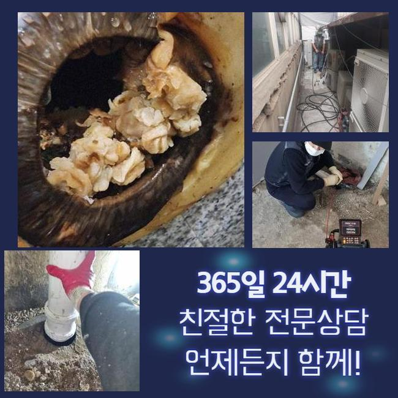
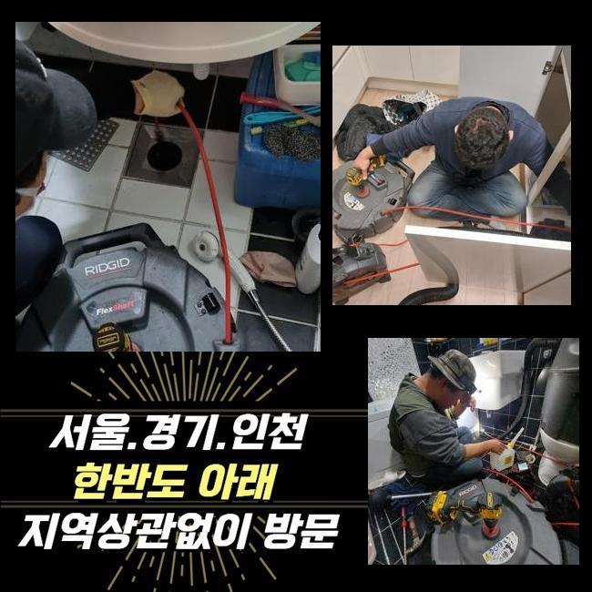
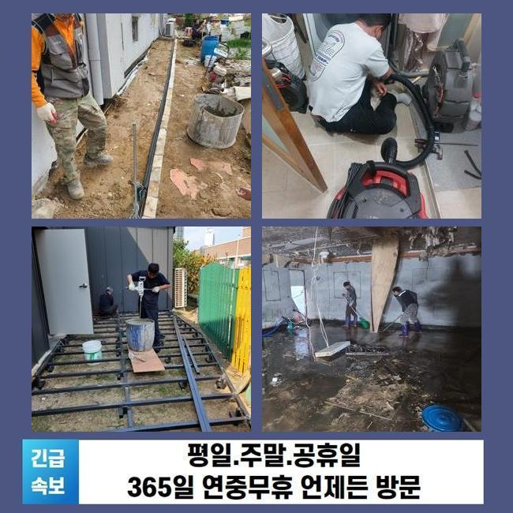
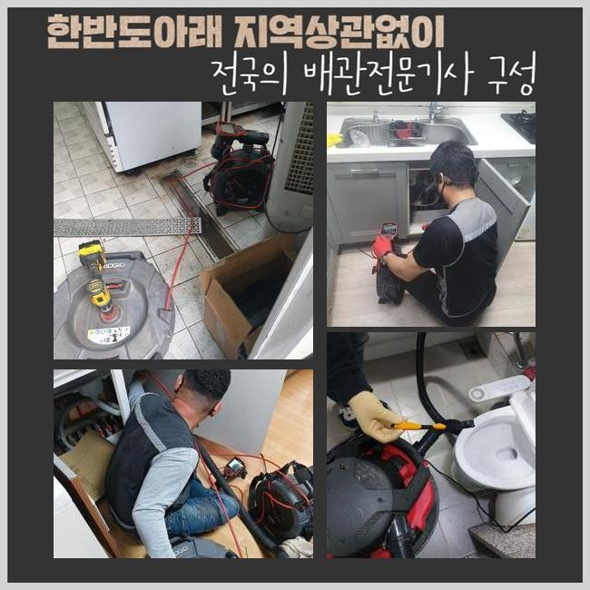
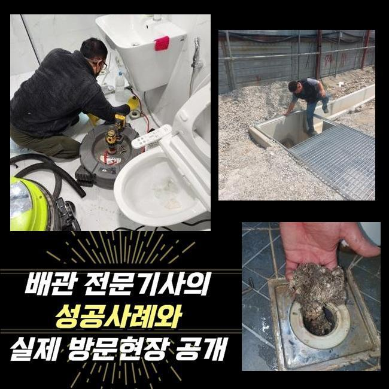
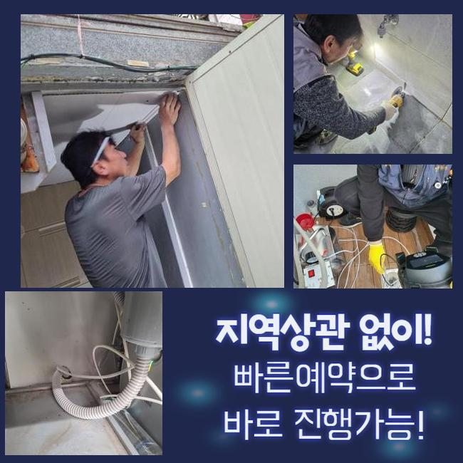
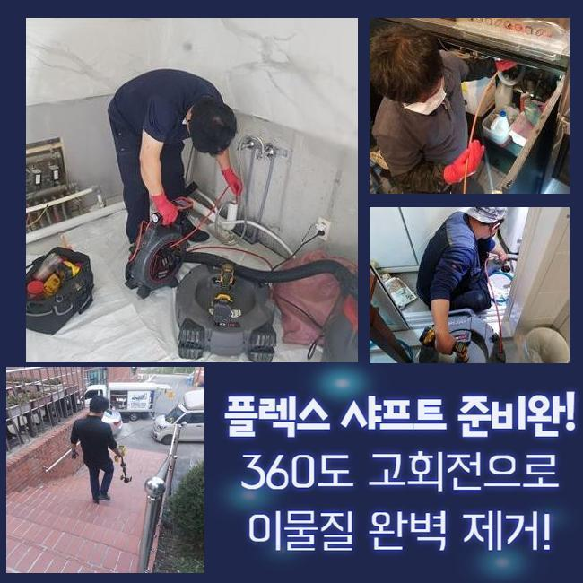

🏠 천안 봉명동하수도뚫음 신부동 하수구뚫는곳 누수
천안 싱크대막힘 전문 시공 후기

📋 작업 개요
- 위치: 천안
- 서비스 유형: 싱크대막힘, 하수구막힘, 배관막힘, 누수수리, 역류해결, 뚫는업체, 배관청소, 고압세척, 설비공사
- 작업 일시: 2025. 1. 12. 20:44
- 업체명: 하수구수사대 (010-5615-2118)
🔍 문제 상황
천안 봉명동하수도뚫음 신부동 하수구뚫는곳 누수
욕실공간이나 싱크대는 필수불가결한 곳인데요
그러므로 일상중에 갑작스럽게 배수문제에 부닥친다면 그에 대한 파급력은 표현하기 힘들 수준이겠죠
반면 물이 천천히 빠지는 상황을 방치하고 무시하는 고객분들이 많죠
시일이 지나가면 증상이 소멸되거나 심각한 문제로 전이되지는 않을거라 간주하기 때문이죠
그러나 실체적 진실은 그것과 다르죠
이에 초반에 적절하게 처리한다면 고약한 상황에 놓이지 않을 수 있답니다
물빠짐이 느리게 된다는건 배수관 안쪽에서 하수 배출을 막아세우는 침전물이 존재한다는 방증이겠죠
이물들이 추가적으로 누적돼 한층 까다로운 장애로 발달하기전 기술자를 찾아서 진단을 적절하게 이행하고 순차적으로 청소해야 돼요
저저번주에 내방드린 지점을 지금 바로 말씀드리고자 하는데요
비슷한 증상으로 기술자를 찾고계시는 이웃분들에게 도움이 되었으면 해요
저희기술팀이 출장간 데는 빌딩 안에 위치한 음식점이에요
일주일전 쯤부터 싱크대와 욕실배관까지 전면적으로 하수처리가 안되는 상태라고 말씀하셨죠

🔎 원인 분석
💡 전문가 진단: 정밀 진단 장비를 사용하여 슬러지의 고착 여부를 판명하고 타격/세척 작업을 실시했습니다.
전적으로 고장나버린건 아니었으며 하루지나면 빠져나가는 모습을 보였기에 추후 정비하자는 마음으로 운영을 이어나가셨다고 하셨어요
결과적으로 사태가 악화되어서 물흐름이 멈춰버렸고 물이 역류되는 사태까지 발발하게 된겁니다
하수관은 상당히 길고 좁다란 통로로 형성돼 있죠
그래서 직관적으로 볼땐 이물들이 얼마나 있나 파악하기 힘들죠
그러므로 공사현장으로 이동할때는 내시경기기를 꼭 챙겨두어야 합니다
내시경cctv의 끝부분엔 전용카메라가 있어요
그것을 이용해 직관이 힘든 파이프 하부까지 선명하게 확인할수 있으며 이물의 종류까지 파악할수 있는거죠
내시경기기로 관찰한 관로 내측은 상당히 지저분했습니다
휴지조각 등을 포함해서 다양한 이물들이 적체되어 있었어요
그러한 찌꺼기들이 들러붙어 돌처럼 굳은 상황이어서 비좁은 배관 길목을 막아서 물빠짐이 올바르게 될수가 없었답니다
그냥 내버려둔다면 성분이 더욱 단단해져 배관에서 떨어지지 않게 돼요
그렇다면 더욱더 정황이 나빠지는 것이기에 빨리 고쳐야 했죠
해당 사태에 쓰이는건 샤프트입니다

🔧 작업 과정
비좁아진 공간으로도 수월하게 투입가능한 이점이 있죠
장비끝에는 노커라는 쇠붙이가 붙어서 고속으로 돌아가면서 배수관안쪽에 잔존하는 견고해진 여러가지 침전물을 분쇄해주죠
바로 이물분쇄업무를 단행하였는데요
전동드릴과 기계를 연결시킨뒤에 샤프트기기를 가동시켜 고착화된 노폐물들을 제거해 나갔습니다
어떤곳에 슬러지들이 집중되어 있는지 확인해야 됐기에 배관카메라 사용도 동반진행 하였어요
해당 기기로 적층량이 많은지점을 우선으로 작업한다면 한층 재신속하게 끝낼수가 있죠
하수관의 내측이 손상되는일이 없게끔 신중한 자세로 노폐물들만을 정밀하게 목표하여 분쇄를 해나갔죠
혹여 세정을 하는 과정에서 관로에 무리한 힘을 주면 균탁이 발생하여 누수증세가 생길수도 있답니다
그러하기에 내시경cctv나 분쇄기기가 구비되어야 하는 부분도 필수이지만 전문가의 테크닉 역시 훌륭해야 하겠죠
찌꺼기들이 모여있는 영역을 깨끗이 정리한다음에 미세한 성분이라도 남지 않도록 없애주었죠
그후 통수시험을 시행했어요
다량의 폐수를 단박에 관로로 쏟았으며 주변에 정체되거나 역류가 일어나지는 않는지 검사하였어요
별다른 특이사항은 없었으므로 즉시 인접한 배수시설로 건너가게 되었네요
이쯤하고 마감한다면 한두달 이용에는 괜찮겠으나 나중에 정체가 발현될 여지가 상존하기 때문이었답니다
욕실의 가지배관과 직결된 횡주관로도 분석하여 막힘의 이유를 알아내기로 결정했죠
화장실의 배관에서 정체가 나타나면 이어진 횡주관까지 찌꺼기가 적체되었을 여지가 높으므로 전체적인 하수관 세척작업을 시행하는게 합당합니다
그러하기에 횡주관으로 이동해 조사를 철저히 이행했고 저희 예상대로 관벽에 달라붙은 노폐물들을 포착할수가 있었어요
횡주배관 및 그와 연결된 파이프들까지 점진적으로 분쇄공정을 시행했고 찌꺼기가 제거된 청결한 관로를 목도할수 있었죠
물티슈를 비롯한 용해되기 어려운 것들은 욕실을 이용하시면서 다시 쌓일 수 달려있어요
그렇기때문에 1년에 한번은 배관업체를 불러서 관리하시는게 좋답니다
또 장기간 배수기능을 보존하는 대책들도 저희들의 지식선에서 상냥하게 말씀드렸습니다


✅ 작업 완료
하수관에 장애가 발발한다면 다양한 어려움을 마주하게 될것이니 애초에 그러한 일이 안나타나게 섬세하게 방예를 하는게 좋답니다
토요일이나 주말에도 영업한다는 내용도 알려드렸고요
오래된 주거지에선 누수증세도 빈번히 발생되기에 이에 대한 수선의뢰도 많아요
이에 곧바로 뚫음뿐만 아니라 누수공사도 한다는 사실을 안내해 드렸어요
어디에서 고장이 생겼고 며칠전부터 그런건지 사전에 알려주신다면 더더욱 신속하게 견적을 드릴수 있답니다
그다음엔 약속시간에 맞게 배관기술자가 전용장비를 갖추고 내방해드리니 부담없이 전화주시길 당부드려요




⚠️ 베란다 누수 및 방수 관리 방법
- ✅ 비가 많이 올 때 창틀 주변이나 아래층 천장에 얼룩이 생기는지 정기적으로 확인해 보세요.
- ✅ 우수관 주변 실리콘 마감이 들뜨거나 깨진 틈새가 있는지 손상 여부를 수시로 체크하세요.
- ✅ 베란다 바닥 타일의 줄눈(메지)이 소실되면 그 틈으로 물이 침투하여 누수가 유발됩니다.
- ✅ 누수 의심 증상 발견 시 방치하면 아래층 손실이 커지므로 즉시 전문가의 진단을 받으십시오.
💡 핵심 정리
- 확실한 장비 작업(내시경 점검 및 샤프트 스케일링)으로 원인을 뿌리 뽑습니다.
- 작업 후 1년 이내에 동일한 부위 재발 시 100% 무상 A/S 서비스를 보장합니다.
- 서울 · 경기 · 인천 전 지역에 24시간 언제든 긴급 출동할 수 있도록 항시 대기 중입니다.
❓ 자주 묻는 질문 (FAQ)
🚨 천안 싱크대막힘 문제로 고민이신가요?
정확한 원인 진단과 확실한 시공으로 재발 없는 해결을 약속드립니다.
24시간 긴급 출동 | 서울 · 경기 · 인천 전지역 | 1년 내 재발 시 무상 A/S